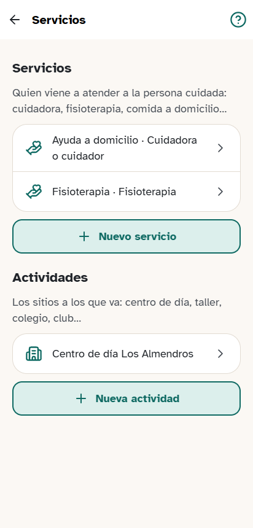

Inicio › Manual › Servicios y actividades
Servicios y actividades
Quien viene a atender a la persona cuidada y los sitios a los que va.

Servicios y actividades
• Servicio: alguien que viene a casa (ayuda a domicilio, fisioterapia…), con su teléfono y su horario.
• Actividad: un sitio al que va (centro de día, taller…), con su dirección, su horario y si hay que llevarle o recogerle.
Sus horarios salen solos en el calendario.
Añadirlos
Solo para: coordinación
Pulsa «Nuevo servicio» o «Nueva actividad», rellena los datos y después su horario. Si hay que llevarle o recogerle, el calendario crea esos turnos para que alguien se apunte.
Tareas de cada visita
Un servicio puede tener una lista de tareas (aseo, paseo, comida…). Quien hace la visita las marca al hacerlas.
¿Aún no usas Tutelia?
Es gratis para organizar el día a día entre varias personas. Así se empieza.